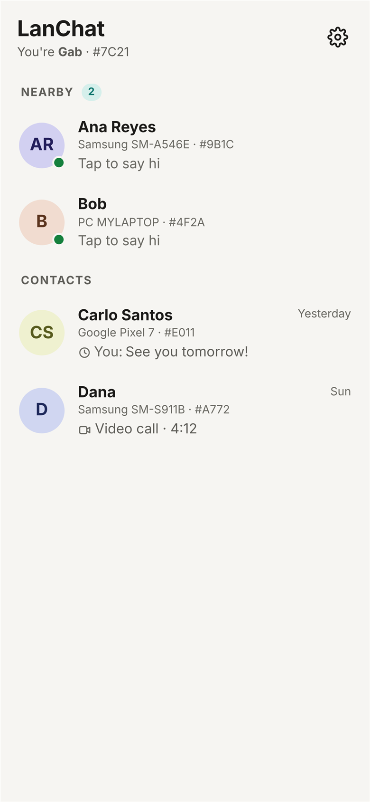
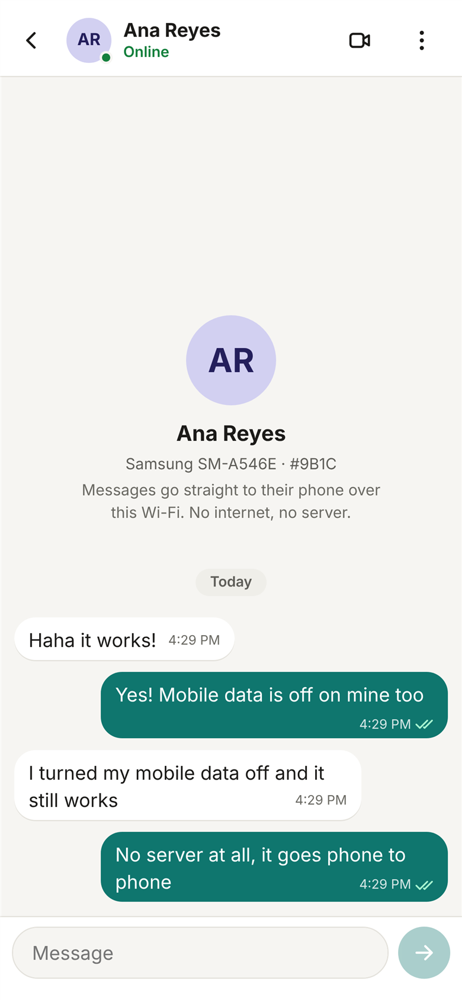
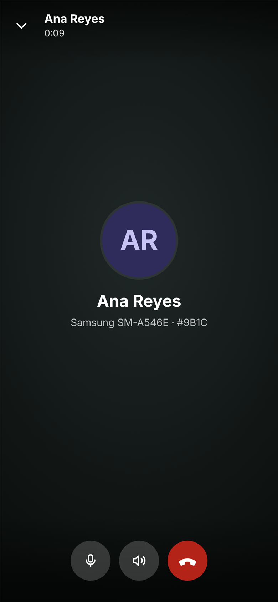
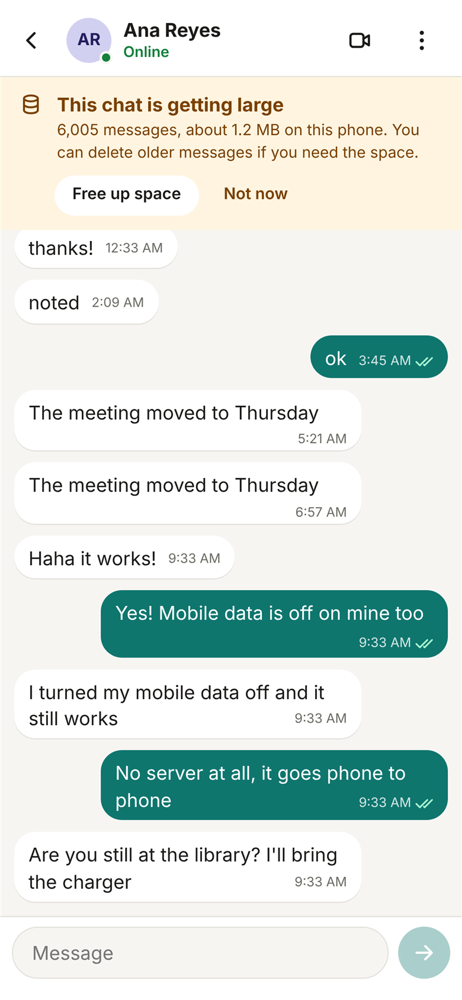
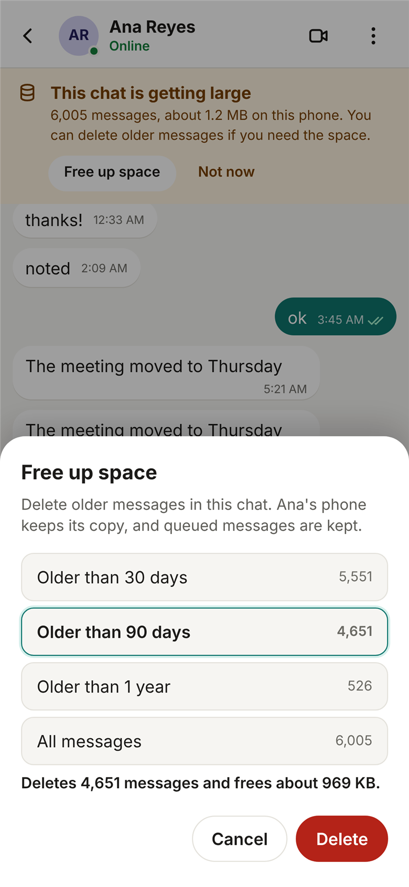

Mobile app
Peer-to-peer messaging and video calling app that works with no internet
LanChat is an Android app that lets people nearby message and video call each other with no internet and no server. Any phones on the same Wi-Fi or phone hotspot find each other on their own, even when that network has no internet connection, and all chats stay on the phones.
.NET MAUI Blazor Hybrid
C# / .NET 10
TCP / UDP
WebRTC
SQLite
xUnit
HTML / CSS
Android
In the app
From the Nearby list to a call, and keeping storage in check
-

01Nearby, with no setupPhones on the same network appear as Name · Model · device code. Earlier chats stay as Contacts. -

02Phone-to-phone chatEach message is acknowledged, so the sender sees ✓ when it is sent and ✓✓ when it arrives. -

03Calls with no calling serverAudio and video calls start from the chat header and are set up over the same phone-to-phone link. -

04Large-chat noticeAt 5,000 messages the chat says how many messages it holds and how much space they take. -

05Free up spaceEach choice shows how many messages it removes and how much space it frees before anything is deleted.
The problem
A local network is often there when the internet isn't
- No internet, no contactEvery message has to travel to a server and back. With a router that has no uplink, a hotspot with no load or a site with weak signal, people in the same room are on one network, but their apps can't reach each other.
- Finding each otherA local network has no accounts or phone numbers to search. Phones get a new IP address whenever they reconnect, so an address can't serve as someone's identity, and a chat history tied to one breaks.
The solution
Find, message, call, and know what to expect
01 · Discovery
Find people nearby automatically
- Every phone announces itself every 2 seconds while LanChat is open, so others appear in the Nearby list within about 2 seconds, with no setup, sign-up or pairing.
- The device code is the identity. Each person shows as Name · Model ·
#4F2A, a short form of a code made from a key pair the phone creates on first launch. - The IP address is only how to reach it. A phone that reconnects and gets a new IP keeps its name, its code and its chat history.
- Contacts are everyone you have chatted with, with “Last seen …” when they are not around.
02 · Messages
Messages that don't get lost
- Straight from phone to phone, acknowledged so the sender sees ✓ when sent and ✓✓ when it arrives.
- An outbox for people who are away. A message typed while the other person is away waits (🕓) and sends itself when they come back. A resent message is never shown twice.
- Saved on the phone. Chats, contacts and the outbox survive restarts, and single messages or whole chats can be deleted.
- A notification for new messages; tapping it opens that chat.
03 · Calls
Video calls without a server
- One-to-one audio and video calls start from the chat header.
- The callee gets a ringing screen in the app, or a notification with Accept and Decline.
- No calling server or relay. The call is set up over the same phone-to-phone link the chat uses.
- Missed, declined and finished calls show as rows in the chat.
04 · Presence
Active, Away or Offline
- Active (filled dot) — LanChat is open on their phone. Messages arrive at once.
- Away (hollow dot) — app closed, but the phone is on this network and receiving. Messages arrive at once and notify.
- Offline (no dot) — out of range, no Wi-Fi, or receiving switched off. Messages wait in the outbox.
- Not marked Offline right away. A phone that goes quiet may just be asleep, so it is shown Offline only after a quick connection check fails.
05 · Storage
Storage that stays in check
- A notice at 5,000 messages says the chat is getting large, with the message count and the space it takes, for example “6,005 messages, about 1.2 MB”.
- Free up space deletes messages older than 30 days, 90 days or 1 year, or all of them, and shows the count and space freed first.
- Only this phone is affected. The other person keeps their copy, queued messages are kept, and the database is compacted so the space really comes back.
- Not now hides the notice until the chat grows by another 5,000 messages.
Battery optimization
Receiving with the screen off, without keeping the phone awake
- Sleep by defaultWith the app closed, LanChat holds no wake lock, ignores other phones' broadcasts, and announces itself every 30 seconds instead of every 2.
- Wake for messagesThe Wi-Fi chip wakes the phone when a connection addressed to it arrives. LanChat stays awake 3 to 10 seconds to save the message, notify and acknowledge, then sleeps again.
- Sender does the workEach phone remembers its contacts' last addresses and dials a sleeping phone directly, so the sleeping phone never has to stay visible.
- No needless wake-upsIdle connections close after 60 seconds, background checks run only while someone has the app open, and nothing relies on timers, which can't wake a sleeping phone.
- Measured, not assumedThis replaced a first fix that kept the CPU awake the whole time, after testing showed the real failure was on the sending side. The app counts its background activity, aiming for under one minute awake on a quiet night, and Settings links to Android's battery settings for phones that stop background apps.
Technical approach
Every phone is both client and server
- Plain networkingUDP broadcasts for discovery and direct TCP connections for chat, each message a length-prefixed JSON frame. It works on any home router or phone hotspot, with mobile data on or off, and there is nothing else to run or pay for.
- IdentityEach phone makes an ECDsa P-256 key pair on first launch and keeps the private key in Android's secure storage. The device code is a hash of the public key, and a phone that presents a code not matching its key is dropped.
- CallsVideo calls use the WebRTC built into the app's WebView. Call setup travels over the existing chat link, with no STUN or TURN servers, and the media is encrypted between the two phones.
- Web skills, native appBuilt in C# on .NET 10 with .NET MAUI Blazor Hybrid. The screens started as XAML pages and were moved to Blazor Hybrid early, so they could be built with HTML and CSS from a design prototype.
- Testable rulesDiscovery, messaging, the outbox, calls, background modes and wake holds live in plain C# libraries with no MAUI code. xUnit tests run two real nodes against each other over loopback, and a console app acts as a second “phone” on a PC.
- Built to change safelyEvery announcement and handshake carries a protocol version (now 6) and the oldest version it still understands, so an older app sees “ask them to update” instead of a peer silently missing.
- Offline storageChats, contacts and the outbox live in a SQLite database on the phone, with backups turned off so a key never ends up on two phones.
Outcome
What changed for people on the same network
- People on the same Wi-Fi or hotspot can message and call each other with no internet, no accounts and no server.
- Messages to someone who stepped away wait and arrive when they're back, never twice.
- A closed app keeps receiving without holding the phone awake.
LanChat is designed around how people nearby actually connect: a shared network with no internet, phones that change addresses, and phones that spend most of the day asleep.